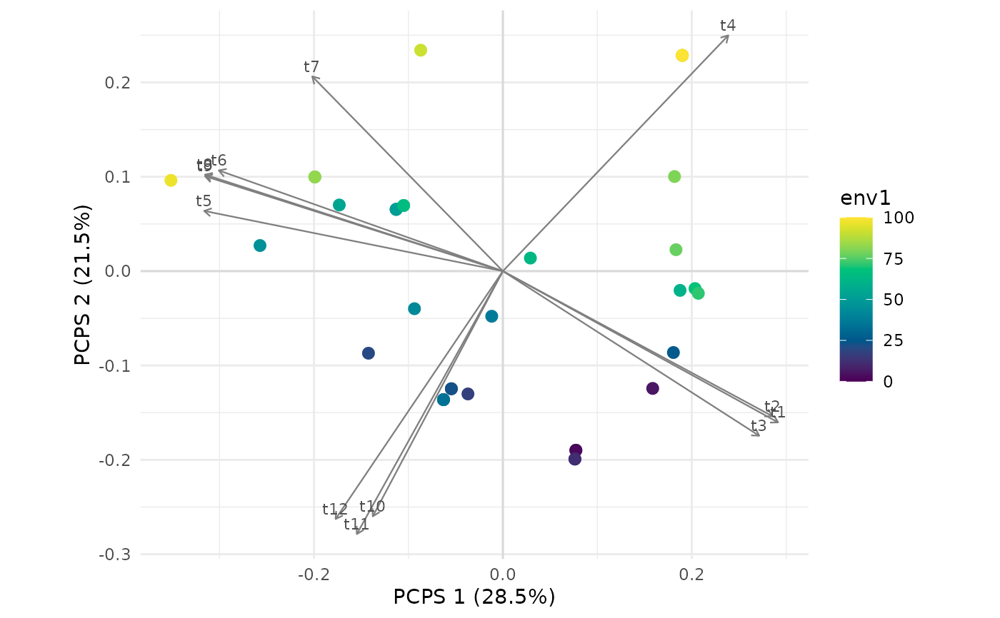

Tests whether the phylogenetic composition of sites follows the environment, with the
principal coordinates of phylogenetic structure of Duarte et al. (2016), the method of the
package PCPS (Debastiani & Duarte 2014). Phylogenetic fuzzy weighting (Pillar & Duarte
2010) spreads the relative abundance of each species over its relatives, which gives the
matrix P; the square root of the Bray-Curtis dissimilarity among rows of P gives the
principal coordinates. The test runs on all that dissimilarity, as a distance-based
regression, and on each axis in axes, as a linear regression.
Arguments
- comm
Matrix with one row per site and one column per species. Species are matched to the tips of
treeby name. Or anmc_data()object, whose parts fill the arguments left out.- tree
A
phyloobject.- env
Predictor, or matrix or data frame of predictors, with one row per site.
- axes
Principal coordinates to test, in order of eigenvalue.
- n_perm
Number of permutations of sites and of species.
- site_permutations
Optional matrix of site indices with one permutation per row, for example from
torus_permutations(), to use instead of free permutations of sites. Empty sites are then allowed: they leave the analysis but their predictors can reach occupied sites.
Value
List of class mc_pcps with tests, a data frame with one row for all the
dissimilarity (whole) and one for each axis, and the columns share, the share of the
positive eigenvalues; r2; statistic, the F statistic; p_site, p_species and
p_max; scores, the sites on all the axes with positive eigenvalues; share, the
share of each of those axes; species, the
correlation of each species' column of the matrix P with those axes (its position in the
biplot of the package PCPS); env, the predictors of the occupied sites; and
permutations, the numbers of permutations and whether those of sites were free or
restricted; and tree, the tree pruned to the species present. plot.mc_pcps() draws
the ordination.
Details
Each test has two permutations, as in PCPS::pcps.sig() and PCPS::matrix.p.sig(): of
sites, which asks whether the environment is related to composition, and of species over
the tips of the tree, which asks whether that relation depends on the phylogeny. p_max is
the larger p-value, and the one to read. Eigenvectors are computed again for each
permutation of species. Axes are not rotated onto the observed ones, which for one axis
at a time changes only its sign and scale and leaves the F statistic unchanged.
Free permutations of sites assume sites are exchangeable. When both the environment and the
communities are autocorrelated, without any relation between them, the test of sites rejects
far too often: on a grid of 10 x 10 sites, at the 5% level, free permutations rejected 29-80%
of the time and p_max 3-24%. site_permutations gives a restricted null model, such as
torus_permutations() on a complete grid, which the package PCPS does not offer. With fields
that wrap around the grid the torus rejected 4-7%, and p_max 1-4%. With fields that stop at
the edges of the grid it rejected 6-25%, and p_max 1-10%, the highest values for fields
that are broad relative to the grid, so the torus reduces this error without removing it in
a landscape with edges. It also costs power: with a correlation of 0.7 between the predictor
and the field behind the communities, the whole-dissimilarity p_site fell from 98-100% to
23-79%.
data-raw/validation_pcps.R checks the statistics against the package PCPS and gives these
rates.
References
Debastiani, V. J., & Duarte, L. D. S. (2014). PCPS – an R-package for exploring phylogenetic eigenvectors across metacommunities. Frontiers of Biogeography, 6. doi:10.21425/F5FBG22943
Duarte, L. D. S., Debastiani, V. J., Freitas, A. V. L., & Pillar, V. D. (2016). Dissecting phylogenetic fuzzy weighting: theory and application in metacommunity phylogenetics. Methods in Ecology and Evolution, 7, 937–946. doi:10.1111/2041-210X.12547
Pillar, V. D., & Duarte, L. D. S. (2010). A framework for metacommunity analysis of phylogenetic structure. Ecology Letters, 13, 587–596. doi:10.1111/j.1461-0248.2010.01456.x
See also
pcc_test() and phylo_beta_test() for other tests over the whole tree, and
torus_permutations(), rigid_permutations().
Other the whole tree:
pcc_test(),
phylo_beta(),
phylo_beta_test(),
phylo_eigenvectors(),
plot.mc_pcps(),
plot_phylo_beta()
Examples
set.seed(1)
tree <- treeshapesim::sim_tree_shape(12)
traits <- species_traits(tree, lambda = 1, optima_range = c(0, 100), rmax_range = c(0, 30))
env <- seq(0, 100, length.out = 36)
comm <- simulate_static(traits, env, incidence = TRUE)$abundance
res <- pcps_test(comm, tree, env, n_perm = 49)
res
#> <mc_pcps> principal coordinates of phylogenetic structure
#> permutations: 49 free of sites, 49 of species; smallest possible p: 0.02
#> test share r2 statistic p_site p_species p_max
#> whole 1.000 0.18435 7.6845 0.02 0.74 0.74
#> pcps1 0.285 0.00286 0.0976 0.74 1.00 1.00
#> pcps2 0.215 0.82350 158.6358 0.02 0.02 0.02
if (requireNamespace("ggplot2", quietly = TRUE)) plot(res)
